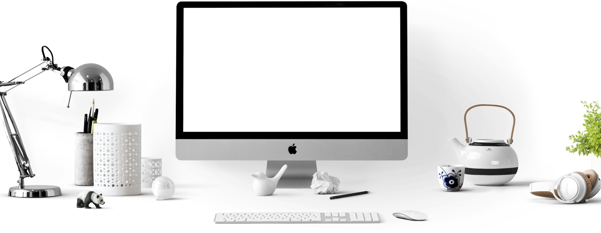

Dezvolt lumi captivante și persoanje care prind viață prin design.
Sunt un designer grafic pasionat, specializat în crearea de universuri și personaje pentru jocuri video. De peste 6 ani, am avut șansa de a contribui la proiecte captivante, combinând designul 2D și 3D pentru a aduce la viață lumi memorabile și povești captivante. Ce mă definește cel mai bine este pasiunea mea pentru fantezie și aventură. Fie că vorbim despre o pădure mistică scăldată în lumină magică sau despre un oraș futuristic cu detalii complexe, mă dedic total pentru a crea medii care îi transportă pe jucători în altă realitate. În plus, pun mare preț pe originalitatea personajelor, lucrând atent la fiecare detaliu pentru ca acestea să fie nu doar vizual impresionante, ci și pline de personalitate. Pe parcursul carierei mele, am avut privilegiul să colaborez cu diverse studiouri de jocuri, transformând povești și idei în experiențe vizuale complexe și imersive. Procesul meu creativ începe întotdeauna cu înțelegerea viziunii și valorilor fiecărui proiect, lucrând îndeaproape cu echipele de dezvoltare pentru a asigura că designul îmbogățește experiența de joc. Când nu sunt ocupată cu crearea de lumi fantastice, mă inspir din natură, călătorii și jocuri video, hobby-uri care mă ajută să aduc un suflu proaspăt fiecărui proiect. Cred cu tărie că designul de jocuri nu este doar o artă, ci și o metodă de a spune povești și de a crea emoții autentice pentru jucători.
Hai să îți povestesc puțin despre mine! Am început aventura în designul grafic la Universitatea Națională de Arte din București, unde am descoperit pasiunea pentru ilustrație și design digital. Am dus lucrurile la nivelul următor cu o specializare postuniversitară în Design pentru Jocuri și Animație la Academia de Arte Digitale din Londra, unde am învățat să creez personaje și medii fascinante pentru industria jocurilor video.
Pe lângă cele doua universități urmate, am mai participat și la câteva cursuri.
Pe lângă pasiunea pentru design, vorbesc fluent engleză, franceză, spaniolă și germană, ceea ce îmi permite să colaborez cu oameni din toată lumea. Am obținut certificări recunoscute precum Cambridge English CAE, DELF B2, DELE B2 și Goethe-Zertifikat B2, care atestă nivelul meu avansat în fiecare limbă.
Aceste competențe lingvistice mă ajută să lucrez cu echipe internaționale și să mă adaptez ușor diversității culturale din proiectele globale de design pentru jocuri. Aceste competențe lingvistice sunt mai mult decât niște calificări pe hârtie – ele îmi deschid ușile către o lume întreagă de posibilități și mă ajută să creez legături autentice cu colegii și clienții mei din diverse culturi. Fiecare limbă pe care o vorbesc îmi aduce o perspectivă nouă și contribuie la creativitatea mea, inspirându-mă să creez designuri care depășesc granițele și diferențele culturale.
Când nu sunt implicată în proiecte de design, mă dedic hobby-urilor care mă inspiră și îmi alimentează creativitatea. Arta ocupă un loc important în viața mea, fie că este vorba de ilustrația tradițională sau pictura digitală. Îmi place să experimentez cu stiluri și tehnici noi, transformând simple idei în imagini care spun povești. Această pasiune îmi oferă constant perspective proaspete și idei pentru proiectele mele.
De asemenea, sunt o mare pasionată de gaming. Jocurile video, în special RPG-urile și titlurile de aventură, mă fascinează prin felul în care îmbină povești captivante cu lumi bine construite. Mă inspiră să înțeleg mai bine ce face un joc memorabil și să aplic aceleași principii în designul pe care îl creez.De asemenea, ador să descopăr lumea prin fotografie de peisaj și călătorii. Fiecare loc nou pe care îl vizitez îmi oferă idei și influențe culturale pe care le integrez în proiectele mele. Aceste experiențe mă ajută să creez lumi autentice și captivante, care să transporte jucătorii în povești unice.

O broscuță simpatică, de un verde intens.

O pisică portocalie cu blana moale și dungată delicat, stă ghemuită confortabil pe un covor de frunze uscate de toamnă..

Un glob pământesc 3D, realist și detaliat, plutește pe un fundal întunecat.
O pisică portocalie cu blana pufoasă și dungată delicat stă ghemuită sub un baldachin natural de frunze portocalii.

O veveriță jucăușă cu blană roșcată, urechi ascuțite și ochi mari, strălucitori, este cocoțată într-o pungă de hârtie maro plină cu alune.
Un șoricel adorabil, cu blană cenușie și urechi mari rozalii, îmbrăcat într-un costum de aviator retro.
O veveriță simpatică ce ține în lăbuțe o mică pungă cu nuci. Ochii mari și expresivi îi conferă un aer jucăuș și prietenos.

Un iepuraș adorabil îmbrăcat într-un kimono tradițional japonez.
Descriere: Am creat designul complet al lumilor pentru
Provocare: Crearea unei atmosfere imersive, cu atenție la detalii, texturi și lumini pentru o experiență unică.
Rezultat: O lume vibrantă, apreciată de jucători pentru realism și complexitate, în care natura, arhitectura și magia se îmbină armonios.
Descriere: Am creat personaje pentru Space Odyssey, un joc de aventură SF. Fiecare personaj are un stil futurist, cu costume complexe și personalitate distinctă.
Elemente cheie: Personaje diversificate, detalii anatomice și trăsături recognoscibile.
Rezultat: Personajele au devenit rapid favoritele fanilor, datorită designului original și intrigant.
Descriere: Pentru acest joc, am proiectat interfața grafică (UI) și elementele HUD integrate perfect în atmosfera urbană și intensă a jocului.
Provocare: Design funcțional, simplu și intuitiv, dar care să păstreze o estetică realistă și să se îmbine cu acțiunea rapidă.
Rezultat: Un UI intuitiv, apreciat de jucători pentru ușurința utilizării și integrarea cu stilul jocului.
Descriere: Crearea de obiecte, arme și elemente de decor pentru Epic Quests, un joc de acțiune. Am modelat și texturat fiecare asset, dându-le o atmosferă de basm și aventură.
Provocare: Crearea de asset-uri detaliate și de înaltă calitate, care să se alinieze cu tema de poveste.
Rezultat: Obiectele create de mine au fost apreciate, contibuind la experiența de joc autentică.
Studio Fantasy Forge
"Maddie a adus o energie proaspătă și originalitate în designul nostru de medii. Jucătorii sunt complet imersați datorită muncii ei detaliate și pline de viață."
Echipa Galactic Studios
"Personajele create de Maddie pentru 'Space Odyssey' au devenit emblematice. Designul său inovator și atenția la detalii sunt excepționale."
Arena Games
"UI-ul realizat de Maddie a fost un element cheie pentru succesul 'Urban Warriors'. E o adevărată profesionistă!"